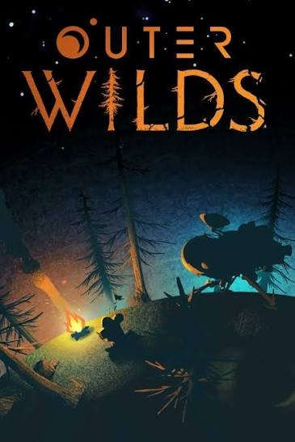

O Jogo
A premissa: um astronauta iniciante, um sistema solar em miniatura e um mistério para desvendar.
Um blog sobre Outer Wilds
Este blog apresenta Outer Wilds, um jogo de exploração e mistério em um sistema solar pequeno. Aqui você encontra a ideia central do jogo, o cenário onde ele acontece e uma visão geral de como se joga.
Cada página trata de um assunto: a premissa, o mapa do sistema solar e a forma de explorar.
Clique nas imagens para abrir cada página.

A premissa: um astronauta iniciante, um sistema solar em miniatura e um mistério para desvendar.

O cenário: um sistema pequeno, com mundos bem diferentes entre si.

Como o jogo funciona: sem armas e sem níveis, guiado pela curiosidade.